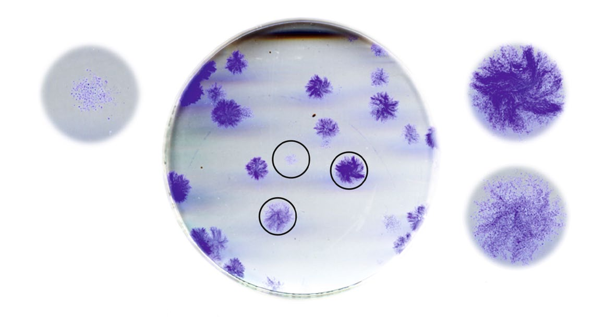

Автор: Цепколенко Ганна Володимирівна
Лікар-дерматовенеролог вищої категорії · кандидат медичних наук

Стаття перевірена: Цепколенко Володимир Олександрович
Керівник Інституту VIRTUS і компанії SmartCell · доктор медичних наук, професор
КОРОТКО
- Вікові зміни шкіри — це передусім зменшення кількості фібробластів і зниження їхньої активності: у літніх людей фібробластів у середньому на 35 % менше, а продукція колагену знижена на 75 % ² ⁴
- Регенераторний потенціал оцінюють за ефективністю колонієутворення фібробластів (ЕКУф) у культурі — показник індивідуальний і від віку не залежить ⁹ ¹⁰ ¹¹
- Проліферативний потенціал визначають за співвідношенням щільних, дифузних і змішаних колоній: він показує, як швидко тканина відновиться після втручання ⁶ ⁷ ¹⁴ ¹⁵
Старіння шкіри та інволюційні зміни дерми
В основі вікових змін шкіри лежать зміни головної клітинної популяції дерми — фібробластів: їхньої кількості, морфології, проліферативного потенціалу і функціональної активності ¹ ⁻ ⁴
Фібробласти не лише підтримують гомеостаз міжклітинного матриксу дерми, забезпечуючи його ремоделювання й оновлення — за рахунок деградації «відпрацьованих» і синтезу нових компонентів: колагену, еластину та основної речовини, — а й відіграють значну роль у підтриманні фізіологічного стану інших шарів шкіри, лишаючись ключовою ланкою її біології ¹.
Дослідження J. Varani і співавт. (2006) показало, що в літніх людей порівняно з молодими загальна кількість фібробластів у шкірі менша в середньому на 35 % ². За даними G. Fisher і співавт. (2002), продукція колагену в шкірі літніх людей у середньому знижена на 75 % ⁴. Природний наслідок цих процесів — зменшення товщини шкіри, зниження її пружності та еластичності, утворення зморшок.
Отже, саме дермальні фібробласти є основною точкою прикладання терапевтичного впливу при корекції вікових змін. Мета цілої низки методів сучасної косметології — мезотерапії, біоревіталізації, пілінгів, фракційного фототермолізу, радіохвильової терапії, дермабразії — стимуляція функціональної активності дермальних фібробластів. І реалізується вона зокрема через контрольоване пошкодження тканини.
Кадочніков Сергій Валерійович, пластичний хірург Інституту VIRTUS, пояснює:
«Саме дермальні фібробласти є основною точкою прикладання терапевтичного впливу при корекції вікових змін».

Як визначають регенераторний потенціал
Показник рахують за ефективністю колонієутворення фібробластів (ЕКУф) — часткою клітин, які в культурі дали колонію з 50 і більше клітин.
Фібробласти — гетерогенна популяція, що включає весь фібробластичний диферон: від мультипотентної мезенхімальної стовбурової клітини і прогеніторних клітин до диференційованого фіброцита. Це означає, що в дермі кожної людини присутні стовбурові та прогеніторні клітини, головне завдання яких — підтримувати клітинну популяцію тканини ⁸.
З біоптату шкіри 4 мм у лабораторії отримують первинну культуру фібробластів, висівають строго визначену кількість клітин у чашки Петрі й культивують за однакових умов. Через 14 днів рахують колонії та визначають ЕКУф — відношення колоній, що виросли, до числа експлантованих клітин ⁶ ⁷.
Величина ЕКУф не залежить від віку: це індивідуальний параметр, що в середньому становить 45,0 ± 9,5 % ⁹ ¹⁰ ¹¹ ¹² ¹³. Чим вища ЕКУф, тим більше в шкірі клітин-попередниць фібробластів, а отже — вищий регенераторний потенціал тканини; і навпаки.
- Біоптат 4 мм — первинна культура фібробластів
- 14 днів культивування за однакових умов
- Колонія — клон із 50 і більше клітин
- ЕКУф у перерахунку на масу біоптату — вміст клітин-попередниць
Проліферативний потенціал: скільки поділів лишилося
Його визначають за відсотковим співвідношенням щільних, дифузних і змішаних колоній у культурі ⁶ ⁷ ¹⁴ ¹⁵
Прогеніторні клітини дерми поділяють на три популяції — МФI, МФII і МФIII (МФ — мітотично активні фібробласти) ¹⁶. Пул МФI має найвищий проліферативний потенціал: його клітини проходять близько 25–30 поділів перед диференціюванням у МФII. Клітини МФII до переходу в МФIII здійснюють близько 15–20 поділів, а клітини МФIII перед диференціюванням у постмітотичні фібробласти — усього близько 5–8 поділів.
Відповідно, у культурі мітотично активні фібробласти утворюють три види колоній: щільні — із сотень і навіть тисяч клітин; дифузні — з 50–100 клітин; змішані. Що більше в культурі щільних колоній, то вищий проліферативний потенціал популяції дермальних фібробластів; що більше дифузних — то нижчий.

Що це дає косметологу
Індивідуальні показники дозволяють підібрати інтенсивність втручання під конкретну шкіру, а не «за протоколом взагалі».
Сучасні методи ремоделювання дерми поділяються на дві групи. Перша — технології, що стимулюють резидентні фібробласти: лазерні та радіохвильові методики, ін'єкції збагаченої тромбоцитами плазми. Друга — методи регенеративної медицини, мета яких поповнити клітинну популяцію дерми функціонально активними фібробластами.
За низьких показників регенераторного і проліферативного потенціалів будь-які процедури проводять обережно, щоб не виснажити й без того малий пул клітин-попередниць: спершу відновлюють дефіцит функціонально активних клітин дерми. Якщо показники в нормі або високі — можна застосовувати косметологічні методи згідно з інструкцією.
Часті запитання
Які процедури показані саме мені?
Ті, інтенсивність яких відповідає вашому регенераторному й проліферативному потенціалу. За низьких показників починають із відновлення клітинного ресурсу, а не з травмуючих методик.
Як часто їх можна проводити?
Інтервал визначає швидкість відновлення тканини — саме її показує проліферативний потенціал: що більше щільних колоній у культурі, то швидше йдуть регенеративні процеси.
Чи залежить регенераторний потенціал від віку?
Ні. ЕКУф генетично детермінована й від віку не залежить: це індивідуальний параметр ⁹ ¹⁰ ¹¹. Від віку залежить кількість самих фібробластів і їхня біосинтетична активність.
З якого віку доречні втручання за естетичними показаннями?
Відповідь дає діагностика, а не паспортний вік: рішення ухвалює лікар за показниками потенціалу шкіри та станом тканини.
Джерела: ¹ Sorrell M., Caplan A. I. Fibroblasts — a diverse population at the center of it all. Int. Rev. Cell Mol. Biol., 2009, v. 276, 161–214. ² Varani J. et al. Decreased Collagen Production in Chronologically Aged Skin. AJP, 2006, 168 (6), 1861–1868. ³ Fisher G., Varani J., Voorhees J. Looking older: Fibroblast Collapse and Therapeutic Implications. Arch Dermatol, 2008, 144 (5), 666–672. ⁴ Fisher G. et al. Mechanism of photoaging and chronological skin aging. Arch Dermatol, 2002, 138, 1462–1467. ⁵ Фріденштейн О. Я. Клонування стромальних клітин-попередників, 1988, с. 257–265. ⁶ Патент RU 2466680, 2012. ⁷ US 8.790.890 B2, 2014. ⁸ Bayreuther K. et al. Arch Gerontol Geriatr, 1992, 15 (1), 47–74. ⁹ Ryan J. et al. In vitro, 1981, 17 (1), 20–27. ¹⁰ Schneider E., Smith J. Int. Rev. Cytology, 1981, 69, 261–270. ¹¹ Терехов С. М., 1984. ¹² Зорін В. Л. та ін. Вісник естетичної медицини, 2011, 10 (2), 16–26. ¹³ Zorin V. et al. J. Tissue Eng. Regen. Med., 2014. ¹⁴ Лебединська О. В. та ін. Морфологія, 2004, 126 (6), 46–49. ¹⁵ Владимирська Є. В., Кошель І. В. Гематологія і трансфузіологія, 1990, 1, 3–5. ¹⁶ Nolte S. V. et al. Cells Tissues Organs, 2008, 187, 165–176.